A intenção deste relato é tanto mapear os caminhos que percorremos durante quatro meses de idas e vindas processuais, quanto apontar erros, acertos, dicas e insights a que chegamos com as apelações e as respostas oficiais dos órgãos requisitados.
Um dos objetivos deste projeto é compilar e disponibilizar os registros textuais dos discursos feitos no segmento de Alto Nível por representantes do governo federal brasileiro durante as COPs. Descobrimos rapidamente que o material disponível na internet era limitado, e que os sites oficiais dos ministérios não tinham qualquer sistematização sobre este tipo de material [aba metodologia]. Adicionalmente, fizemos uma busca intensa no repositório de documentos oficiais mantido pelo secretariado da Organização das Nações Unidas (ONU) para Mudanças Climáticas, sem conseguir encontrar a totalidade dos documentos procurados.
Isso nos levou ao caminho mais seguro para exigir do Estado e seus agentes a disponibilização de dados e registros oficiais de interesse público sobre o assunto: os pedidos com base na Lei de Acesso à Informação (LAI). Foram realizados 10 pedidos de LAI no total, 23 recursos e inúmeros alargamentos de prazos para respostas ao longo de quatro meses depois desde o primeiro pedido, em 26 de maio de 2022.
Os primeiros quatro pedidos tinham como base o escopo total do projeto, ou seja, registros de discursos de autoridades brasileiras em todas as COPs Climáticas. Solicitamos o material para quatro órgãos, escolhidos por terem ligação com a temática das conferências, que poderiam ter os discursos que procurávamos: os Ministérios do Meio Ambiente (MMA), Relações Exteriores (MRE), Agricultura e Pecuária (MAPA), e Presidência da República (PR).
Desde o início, a Presidência foi a pasta mais reticente nos retornos. Os servidores responsáveis não apresentaram qualquer comentário, justificativa ou argumento para repassar os pedidos, dando a impressão de que o encaminhamento silencioso para quaisquer outras pastas é regra - ao menos sobre os assuntos procurados para este projeto. Dessa forma, o pedido feito à PR foi encaminhado para o MMA, que negou continuidade ao pedido, pois era igual ao feito diretamente à pasta.
Desde o começo, adotamos a forma de dividir o pedido em tópicos numerados, o que pode diminuir as chances de negação completa do pedido. Sem uma divisão específica para cada tópico, qualquer erro ou confusão no texto pode servir de base para negar o pedido por inteiro, seja por conta de alguma dubiedade, erro de digitação ou uma formulação errada do pedido.
Com os tópicos, a pasta deve ao menos disponibilizar os dados que tem, ainda que incompletos, justificar a ausência de uma parte dos dados nesta situação e indicar órgãos/departamentos que porventura detenham a informação requerida.
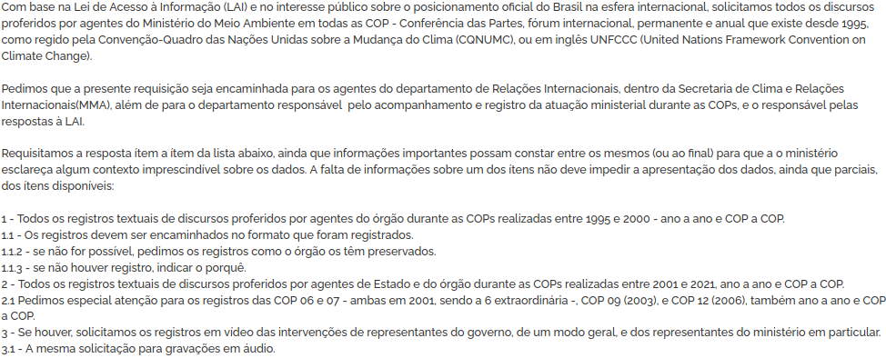Todas as respostas iniciais ignoraram os tópicos numerados, mas a presença deles nos pedidos foi muito importante, pois ela pôde ser usada, em maior ou menor grau, como fator a ser reconsiderado pelas pastas. Após um recurso à primeira instância, o MAPA indeferiu o pedido, confirmando que não tinha nenhum dos registros pedidos, mas indicava o MMA e o Itamaraty (MRE) como prováveis mantenedores desse tipo de informação.
A primeira resposta do Itamaraty ao nosso pedido por registros de todas as COPs Climáticas baseou-se principalmente no argumento do art. 13 do Decreto n° 7.724/2012, que regulamenta a Lei de Acesso à Informação (LAI): “não serão atendidos pedidos de acesso à informação: II - desproporcionais".
A justificativa alega que “demandaria pesquisa extensa tanto nos sistemas digitais quanto nos arquivos físicos e resultaria numa quantidade imensurável de horas de pesquisa e análise”. Você pode acessar o PDF que agrupa todos os recursos e pedidos na íntegra aqui. A resposta final imposta pela Controladoria-Geral da União (CGU), com permissão de acesso parcial aos dados, não foi entregue a tempo para que os eventuais novos dados fossem agregados à análise deste projeto.
Um dos requisitos para a recusa de um pedido considerado “desproporcional” é de que os servidores responsáveis pelos pedidos de LAI “ao menos devem ter condições de estimar o trabalho que teriam para tratar a demanda”, apontou o professor, advogado, cofundador da Fiquem Sabendo e especialista em LAI, Bruno Morassutti, em uma das orientações sobre como responder às recusas dos pedidos.
Apenas depois que apontamos isso na resposta é que passaram a tentar demonstrar a desproporcionalidade nas respostas subsequentes, de formas mais contraditórias a cada resposta. A primeira justificativa do Itamaraty para os “trabalhos desproporcionais” foi genérica, sem quaisquer medições de horas ou pessoal.
Em seguida, a pasta fez uma projeção de 2 mil documentos e 300 horas de trabalho. Na última resposta direta do órgão - a 3ª Instância dos pedidos de LAI é julgada pela Controladoria-Geral da União (CGU) - refizeram o cálculo: desta vez, seriam mais de 7 mil documentos, sem justificativa para o número de servidores ou tempo necessário para o novo volume estimado de dados.
Outra alegação, utilizada neste e em outros pedidos que fizemos à pasta, é a de que, para disponibilizar os dados - que descobrimos em outra resposta posterior serem separados por ano, e não assunto, ao menos no Itamaraty - seria necessária uma análise prévia dos registros.
O art. 39, §4º da LAI (Lei 12527/2011) diz que informações não classificadas após dois anos da entrada em vigor da LAI são automaticamente públicas. “As informações classificadas como secretas e ultrassecretas não reavaliadas no prazo previsto no caput serão consideradas, automaticamente, de acesso público”. Ou seja, o prazo para órgãos da administração pública reavaliarem e classificarem informações confidenciais já estava encerrado desde 2013.
O argumento de pré-análise do material foi utilizado em respostas a este e outros pedidos nossos. Neste processo, a alegação se manteve até a última resposta da CGU, que permitiu acesso a alguns registros de discursos ainda não entregues pelo órgão, e que deu um prazo de 60 dias para que o Itamaraty entregue cópias dos registros que mantém de discursos de “agentes públicos brasileiros” em um período de três “anos anteriores a data do registro do pedido”.
Ou seja, não é possível saber qual material será entregue, pois se a resposta ao pedido geral (detalhes abaixo) for levada ao pé da letra, seriam apenas duas conferências cujos registros já temos: a COP 26 (2021) e a COP 25 (2019), já que em 2020 a conferência não foi realizada por conta da pandemia de Covid-19.
Um dos argumentos para uma entrega tão restrita foi justamente uma suposta pré-análise, como mostra o recorte abaixo, com a conclusão da Auditoria Federal de Finanças e Controle:
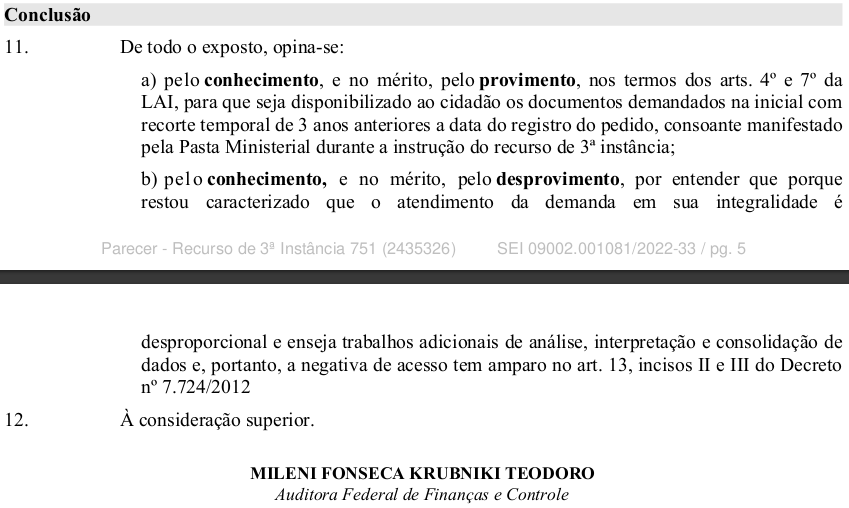O MRE argumentou, ainda, que nossa demanda seria um pedido individual, e não de interesse público: “o grande volume resultante da pesquisa acarretaria custo significativo, por período de tempo apreciável, de funcionários que deixariam de executar as suas atividades institucionais para atender uma demanda de cunho individual em detrimento do exercício da atividade fim do Ministério de Relações Exteriores” (grifo nosso).
Como nossas réplicas focaram nos dois primeiros argumentos, o MRE também deixou de lado a alegação de “cunho individual”. No entanto, além de serem informações de interesse público, é função do Itamaraty ser órgão do Executivo “responsável pela política externa e pelas relações internacionais do Brasil nos planos bilateral, regional e multilateral”, o que implica no registro e gestão de dados de um dos eventos internacionais mais importantes para a gestão e combate à emergência climática: as Conferências do Clima da ONU, ou COPs.
Em linhas gerais, esta foi a argumentação utilizada - e aceita - para contestar este mesmo argumento para a recusa ao acesso a COPs específicas, das quais falaremos mais à frente neste relato.
Mesmo antes do aumento expressivo de pedidos de LAI durante o primeiro ano da pandemia de Covid-19 no Brasil (2020), as recusas de agentes do poder público durante o governo Bolsonaro já vinham aumentando, inclusive com argumentos não previstos na legislação, como a acusação de “pescaria” ou “fishing expedition - termo pejorativo em inglês que descreve uma pesquisa ampla por informações em busca de algum fato que possa incriminar uma pessoa ou instituição”, como explicou a Agência Pública ao divulgar os dados de sua pesquisa sobre respostas a pedidos de LAI em 2019.
As negativas que recebemos durante os meses de apuração foram outras, mas todas convergem ao focar a argumentação das negativas em detalhes dos pedidos mal formulados ou supostamente dúbios. Ou, também, na suposta falta de condicionantes que deveríamos apontar logo de início, como o acesso à metodologia de busca que o órgão realizara para negar o acesso à informação (detalharemos logo adiante).
Tornou-se claro desde o início que quanto menos detalhamento for feito, tanto sobre os dados procurados quanto aos destinatários responsáveis, mais facilmente o órgão negará a informação, seja por trabalhos adicionais, seja por pedido genérico. Portanto, indicamos uma boa pesquisa prévia sobre a estrutura do órgão e seu modelo de armazenamento de dados, além do apontamento criterioso dos dados solicitados e de pedir expressamente a metodologia de pesquisa em caso de recusa.
No nosso caso, incorremos em dois erros importantes no texto dos pedidos, só percebidos depois de encaminhados.
O primeiro, repetido em todos os pedidos, foi solicitar "os discursos proferidos por agentes públicos brasileiros", e não “representantes do Executivo federal”, ou outro termo que indicasse somente os ministros de Estado ou representantes do governo federal. Especialmente no caso do Itamaraty - cujos servidores participam das mesas de negociações, grupos de trabalho e de eventos paralelos oficiais -, isso abre margem para a interpretação de que o pedido seria por todos os discursos de servidores públicos que tiveram falas durante as COPs Climáticas.
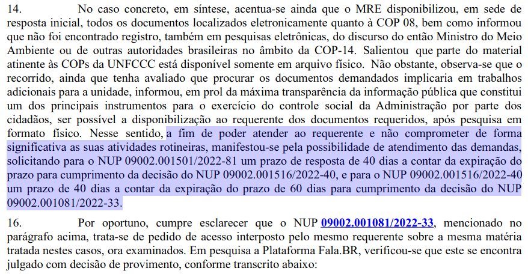Ainda que tenhamos deixado claro que aceitaríamos respostas parciais, e de em todos os pedidos haver um tópico ou subtópico pedindo especial atenção a registros de discursos de ministros do governo federal e Presidência, a maneira e as palavras usadas podem ter sido a chave para a série de negativas (hipótese).
Entendemos, também depois de fazer os pedidos de LAI, que há diversos níveis de encontros entre líderes e representantes políticos mundiais durante as COPs, cada um com seu grau de importância - sem contar os diversos grupos de trabalho e eventos paralelos.
O segundo erro principal foi não nos atentarmos sobre em qual desses espaços ou instâncias das Conferências os discursos que conseguimos encontrar foram feitos. Isso nos impediu, por exemplo, de utilizar alguns discursos concedidos pelos órgãos via LAI, pois tratavam de discursos feitos em outros espaços, mais técnicos e menos políticos. A partir de então, combinamos de usar para este trabalho somente registros de discursos feitos durante abertura, encerramento ou no segmento de Alto Nível da Convenção.
O pedido referente a todos os discursos de todas as COPs feito ao Ministério do Meio Ambiente tomou um caminho bem diferente do feito ao Itamaraty. Apesar de ter pedido prorrogação de início, a primeira resposta do MMA foi inesperada: responderam que teriam apenas o registro do discurso da COP de 2021, feito pelo ministro Joaquim Leite, sucessor de Ricardo Salles.
Retrucamos, questionando como o MMA não tinha sequer o registro da COP de 2019, quando Salles era ministro do mesmo governo do ministro Joaquim Leite. Apontamos, também, que não houve qualquer justificativa para não encontrarem nenhum outro registro de discurso dos outros 20 eventos solicitados.
Para reforçar a argumentação, envidamos uma nova pesquisa (não exaustiva) no próprio site do ministério. Encontramos um link no antigo site - estava fora do ar mesmo duas semanas após o segundo turno, com o aviso das eleições - com publicação que compilava todas as intervenções e discursos de Isabella Teixeira, ministra do Meio Ambiente de 2010 a 2016, durante as COPs Climáticas das quais participou como representante do governo brasileiro. Enviamos o link na resposta de 1ª instância com a seguinte conclusão, em destaque na imagem:

É curioso que na primeira resposta houve um desentendimento interno do órgão, o que se desenrolou em uma argumentação igualmente confusa, pois o pedido é classificado como “deferido”, ou seja, que seriam franqueados os discursos. Apesar de a chefe de gabinete do ministro do Meio Ambiente nos dar razão, a representante do “Ponto Focal Nº1 - Ascom” ignora o entendimento da colega, e registra dois argumentos contrários.
Primeiro, a pessoa apenas confirma que o link enviado como exemplo é real, fazendo a ressalva de que os hiperlinks internos não funcionam mais - com exceção de um, que foi repassado, mas ao ser checado para este texto, retorna um aviso de “vídeo indisponível” no YouTube. No organograma do MMA, o gabinete do ministro é quem coordena a assessoria de comunicação, portanto o entendimento da chefe de gabinete deveria se impor.
Veja a primeira resposta, da chefe de gabinete do ministro do Meio Ambiente, que aprova nosso recurso:
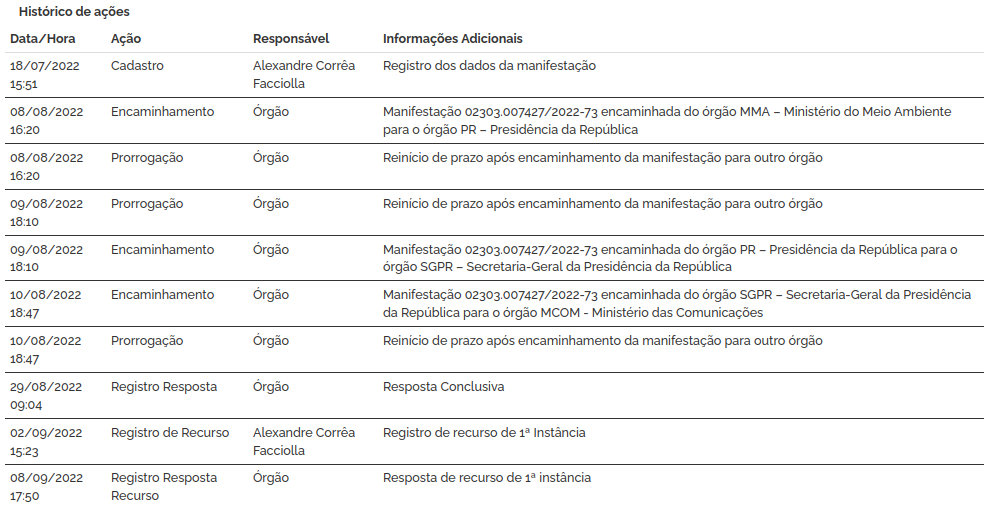Em seguida, a representante do “Ponto Focal Nº1 informa que o site no qual os links foram encontrados é o antigo site do MMA, e que este ficaria temporariamente fora do ar até o fim das eleições, em “atendimento à legislação eleitoral” (SIC). Negando, portanto, o acesso à informação previamente concedida:
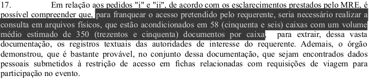“Não é possível aceitar a negativa com base na Lei Federal 9.504/1997 (Lei das Eleições). O chamado período de 'defeso-eleitoral' tem a finalidade exclusiva e restrita de coibir o uso indevido da administração pública para publicidade partidária ou proselitismo em prol do gestor atual. De maneira alguma o art. 73 da Lei Federal 9.504/1997 pode ser interpretado como fundamento para restringir o direito fundamental de acesso do cidadão. Pelo contrário: com mais razão, no período eleitoral o cidadão possui o direito de requerer informações com a finalidade de tomar contas do gestor atual e, assim, tomar uma decisão consciente e informada acerca do exercício de seu direito fundamental ao voto. Negar informações em razão do período de defeso-eleitoral prejudica o exercício do direito ao voto e configura abuso de poder político.” (grifos nossos)
Modelos (e informações) sobre pedidos e recursos de LAI como este, sobre todo tipo de assunto, podem ser conhecidos pelo projeto WikiLAI, portal feito e mantido pela Fiquem Sabendo, agência de dados independente especializada emLei de Acesso à Informação (LAI).
O questionamento surtiu efeito parcial, e o MMA encaminhou discursos de 7 COPs, sendo dois discursos que ainda não tínhamos: da ministra Marina Silva na COP 12 (2006), e o discurso de encerramento da ministra Izabella Teixeira na COP 18 (2012). Este último foi o único acrescentado ao nosso banco de dados, pois o discurso da COP 12 referia-se a sessão do Diálogo sobre Ações Cooperativas de Longo Prazo, instância que não utilizamos para este trabalho por estar fora do escopo de nossa análise. É possível acessar esse e outros registros em nosso banco de dados gerais aqui (HIPERLINK).
Ao responder que encontrara alguns registros, o MMA afirmou que pediu ajuda ao departamento de TI uma busca no antigo site - ainda fora do ar. O órgão então “realizou busca por pdfs com os termos "discurso" e "cop" nos servidores do antigo portal do MMA e encontrou alguns arquivos, e, assim, os franqueou ao requerente”, resumiu a CGU em última instância.
O método de busca descrito pelo órgão parece ter sido o mais básico possível. Para reforçar nosso argumento, fizemos mais uma busca em paralelo no portal da pasta (além da que fizemos antes dos pedidos), desta vez com os mesmos termos utilizados pelo departamento de Tecnologia da Informação do ministério.
Descobrimos, como suspeitávamos, outros registros - tanto de discursos de outras COPs Climáticas que já tínhamos, quanto de eventos muito próximos tanto na temática, quanto no ano de realização, como a Conferência das Partes (COP) da Biodiversidade em sua 8ª edição, em 2006. Esse foi o mesmo ano de um dos registros que buscamos, o da COP 12.
Após a pesquisa - e o devido registro de todos os links com os discursos encontrados no Internet Archive - Wayback Machine - fizemos novo recurso. Apontamos o registro de três outras COPs climáticas que achamos, além das encaminhadas pelo MMA, e questionamos se a pasta efetivamente tinha ou não algum backup dos discursos, além dos armazenados no site antigo.
Isso porque não nos parece razoável que registros de atuação direta do órgão em encontros internacionais sobre o tema estivessem apenas no antigo servidor da pasta - que se mantém, desde a primeira resposta, fechado enquanto seguem as eleições. Além dos argumentos acima, reproduzimos a sugestão cuidadosa e detalhista do professor Morassutti sobre a questão da metodologia, que reproduzo a seguir:
"A disponibilização da metodologia utilizada na pesquisa pelos documentos não consta na demanda pelo simples fato dela ser um pressuposto lógico do fornecimento de informações públicas. Se, por um lado, seu fornecimento é desnecessário quando a resposta é positiva, sua apresentação é obrigatória em caso de resultado negativo para que seja possível determinar se o órgão tomou todas as medidas necessárias para exaurir a busca em seus arquivos. Com efeito, sem acesso à metodologia se torna inviável controlar eventuais abusos ou buscas equivocadas ou incompletas que tenham sido feitas por agentes públicos. Ademais, seu fornecimento também é necessário para que seja dado adequado cumprimento ao art. 50, caput da Lei Federal 9.784/1999, pois esta exige que a resposta negativa indique os fundamentos fáticos do não fornecimento da informação. Diante do exposto, requisitamos que este recurso seja conhecido e provido para fins de fornecimento das "informações requeridas" (grifos nossos).
Ao decidir sobre o último recurso ao MMA, a CGU não elucidou a questão colocada, e optou pelo “não conhecimento” - quando não há análise do mérito do pedido, como informa a própria pasta ao fim da resposta. O órgão recursal justificou a resposta afirmando que os registros fornecidos davam conta de todos os itens do pedido inicial, e enquadrou nosso questionamento como “inovação recursal”. A prática pode ser vedada - é uma escolha facultativa para o órgão demandado - pela Súmula 02/2015 da CMRI - Comissão Mista de Reavaliação de Informações - órgão colegiado composto por nove ministérios e última instância recursal para pedidos de LAI na esfera administrativa.
Dessa forma, como nos explicou o professor Bruno Morassutti, não seria possível recorrer da resposta. A partir daí, focamos nossos esforços na busca, também via LAI, por discursos de 4 COPs (8, 9, 12 e 14) ainda não encontrados.
Ao fazer os novos pedidos por discursos de quatro COPs específicas, não tínhamos ideia se o pedido completo (1995 a 2021) seria respondido na íntegra ou se, mesmo parcialmente, resultaria nos discursos dos anos específicos que procurávamos agora - COPs Climáticas 8, 9, 12 e 14. Contudo, isso não impediu a CGU de justificar o “não conhecimento” desses novos pedidos a partir da resposta final que a CGU determinou ao Ministério do Meio Ambiente (MMA) ao pedido completo (por todas as COPs) feito ao mesmo órgão, como explicado no tópico anterior.
Ou seja, mesmo com nossa apresentação de links do site da pasta com discursos de eventos contemporâneos aos que buscávamos, ou até o envio de um registro (COP 9) enviado pelo Itamaraty com discurso na íntegra de um representante do próprio ministério do Meio Ambiente, a pasta ambiental alegou desde o início que os registros sequer existissem.
Quando exigimos uma explicação para a negativa - partindo de princípios lógicos e legais, os quais mostraremos a seguir -, passaram a alegar que seria uma “inovação recursal”.
Ambas as réplicas definitivas destes pedidos feitos ao MMA apontavam a resposta ao pedido geral (entregue poucos dias antes) como fundamento para dizer que o pedido de esclarecimento sobre a metodologia já havia sido respondido. Foram além: alegaram que não havíamos informado que os discursos dos novos pedidos não haviam sido contemplados no pedido anterior.
Quem estiver atento até aqui, percebe que é um disparate, pois estes e outros pedidos específicos foram feitos enquanto os recursos ao pedido geral ainda estavam em andamento. Veja a justificativa - idêntica em ambos os pedidos ao MMA - abaixo:
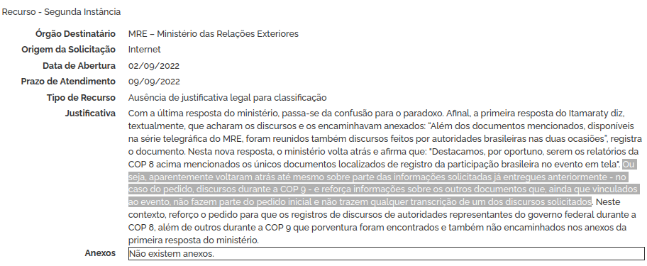Além da inovação recursal, alegaram “preclusão administrativa” para negar a metodologia usada. Este conceito impede o conhecimento de recursos após “exaurida a esfera administrativa” nos termos do art. 63, inciso IV da Lei no 9.784/1999, como na imagem acima.
Como explicamos inicialmente, nossas pesquisas online renderam discursos da maior parte das COPs realizadas entre 2004 (COP 10) e 2021 (COP 26), faltando registros dos encontros de 2006 (COP 12) e 2008 (COP 14). O recorte a partir da COP 10 (realizada em 2004) foi circunstancial: não encontramos em nossas buscas quase nenhum registro anterior. Os achados vieram de diversas fontes: sites oficiais, Internet Archive, ONGs, e acervos de veículos midiáticos. Mesmo com esses registros em mãos, não sabiamos dizer se eram todos os existentes de cada encontro, pois não havia sistematização desses dados.
No caso das COP 8 e 9, nos pareceu interessante porque nosso recorte começaria em 2002 (COP 8), dez anos após a Conferência das Nações Unidas sobre o Meio Ambiente e o Desenvolvimento, a Eco-92, no Rio. Além disso, com estes quatro registros, teríamos acesso às posições oficiais do final do segundo governo Fernando Henrique (2002), que enfrentava graves secas e apagões de energia, e todos os referentes ao governo Lula e seus sucessores até Bolsonaro.
As respostas do Ministério das Relações Exteriores (MRE) às nossas solicitações de registros de COPs específicas também tiveram sua própria dose de respostas contraditórias e impasses sobre metodologia de buscas. Os dois entregaram metade dos registros, e o retorno definitivo (CGU) de ambos pedidos foi o que mais demorou a chegar.
Em compensação, a resposta às nossas apelações veio em um único documento, o qual decide que o Itamaraty deve buscar nos arquivos físicos e entregar, em 60 dias da decisão, os registros das COPs 8 e 14. Caso não sejam encontrados, o MRE deve “declarar expressamente a inexistência da informação, se for este o caso”, define o documento.
À primeira vista, a resposta ao pedido por discursos feitos durante as COPs 8 e 9 estava completa. Eles chegaram a alegar que todos os documentos entregues estariam disponíveis no servidor do ministério e com acesso público. Não é possível saber o que houve de fato, mas os arquivos anexados continham registros de um discurso da ministra Marina Silva na COP 9 (em um segmento da convenção que não nos interessava), e outro do Ministro da Ciência e Tecnologia do Brasil - Eduardo Campos, à época - no segmento de Alto Nível da COP 10.
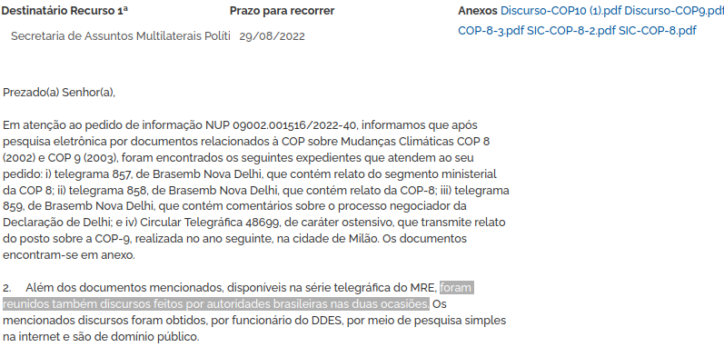Imaginávamos, portanto, que houve apenas uma confusão com os documentos enviados. Perguntamos: “se a questão foi apenas uma falha na transmissão do registro em falta (COP 8), solicito rápido retorno com o registro do discurso que falta.”
Em resposta, o MRE passou a afirmar que não possuía registros de discurso da COP 8, apenas outros documentos internos com relatos institucionais sobre o evento. Respondemos estar diante não mais de uma aparente confusão técnica, mas de uma situação “paradoxal”. Veja abaixo a nossa resposta:
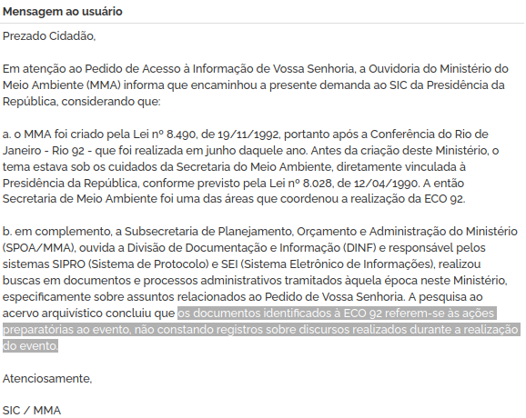Na última resposta direta do Itamaraty (2ª instância), o órgão nega a existência de registros de discursos da COP 8. No entanto, a pasta propõe um prazo de 40 dias a mais do que os 60 dias definidos para a resposta ao pedido geral de discursos das COPs, respondido uma semana antes desta resposta. O novo prazo de resposta definitivo sobre o registro da COP 8 ficaria, portanto, para dali a três meses (93 dias).
No caso do pedido das COPs 12 e 14 ao MRE, o ministério vai além e propõe a busca por discursos apenas da COP 14 (2008), um período de quase 5 meses, ou 140 dias.
A partir das duas respostas destacadas acima, e 46 dias após a primeira decisão geral favorável (CGU-MRE) usada como parâmetro temporal, a CGU respondeu os dois, diminuindo para 60 dias o tempo disponibilizado pela CGU para o MRE se pronunciar conjuntamente sobre os registros da COP 8 e COP 14.
Como a resposta veio faltando apenas duas semanas para a resposta final e geral, o pedido referente às COP 8 e 9 pode se estender por mais seis dias que o Itamaraty teria, caso o recurso anterior tivesse sido ratificado. Contudo, como explicou a CGU na decisão única para os dois casos, o Itamaraty propôs que o pedido referente às COP 12 e 14 fosse respondido 40 dias depois dos 40 dias a mais já solicitados para a busca apenas dos registros referentes à COP 8, já que os sobre a COP 9 já haviam sido entregues. Ou seja, seriam 80 dias, quase três meses a mais de tempo para a busca e confirmação de apenas duas COPs.
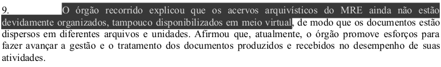A seguir, destacamos o trecho sobre a “dosimetria” que a CGU propõe para achar um meio termo que não implicasse um período tão longo de espera (mais de 100 dias, como no item 17 da resposta destacado abaixo), e nem um período curto demais que pudesse prejudicar o funcionamento do MRE.
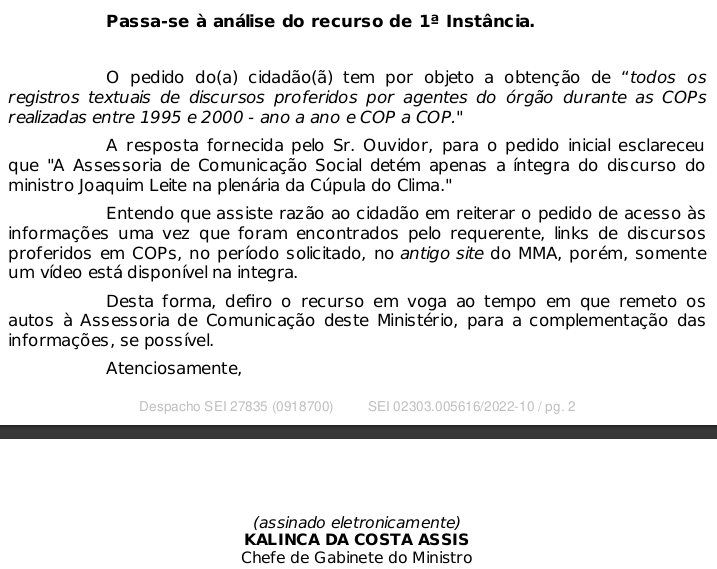:De acordo com o manual “Acordo de Paris - um guia para perplexos”, a ECO-92 foi “até então o maior ajuntamento de chefes de Estado da história, produziu três convenções das Nações Unidas, uma declaração sobre florestas e uma carta de intenções sobre desenvolvimento sustentável, a Agenda 21”. O livreto é uma produção conjunta das redes de atuação ambiental Observatório do Clima (brasileira) e LACLIMA (rede latino americana de advogados especialistas em direito climático), e foi publicado às vésperas da COP 26 (Glasgow-2021) para ajudar jornalistas e pessoas interessadas a entender melhor o contexto de mais de duas décadas de negociações internacionais.
Como aponta o Manual, a Conferência das Nações Unidas sobre Meio Ambiente e Desenvolvimento, ou ECO-92 (também chamada de Rio-92 e Cúpula da Terra) trouxe os subsídios necessários para que as Conferências das Partes (COPs) Climáticas passassem a existir a partir de 1995. O evento representou a ratificação, com a assinatura de inúmeros líderes e chefes de Estado, da Convenção-Quadro das Nações Unidas para Mudança do Clima (UNFCCC), ou simplesmente Convenção do Clima.
A necessidade de um documento que comprometesse a maior parte da humanidade com um futuro com um meio ambiente seguro veio com a criação, em 1990, do IPCC (Painel Intergovernamental sobre Mudanças Climáticas), que já alertava sobre os riscos para o clima das emissões dos chamados gases de efeito estufa, produzidos por queima de combustíveis fósseis e por desmatamento.
Aprovada em maio de 1992, a Convenção passou a vigorar em 1994 - e a ter sua implementação fiscalizada a partir de 1995, com a primeira COP Climática. O artigo 2º da convenção afirma que o objetivo do instrumento “é o de alcançar, em conformidade com as disposições pertinentes desta Convenção, a estabilização das concentrações de gases de efeito estufa na atmosfera num nível que impeça uma interferência antrópica perigosa no sistema climático”. Diante de todo este contexto, avaliamos importante solicitar, via LAI, o acesso a discursos públicos feitos durante a ECO-92, dos quais trataremos a seguir.
Inicialmente, fizemos o mesmo pedido para apenas dois órgãos que identificamos como os mais prováveis de manter algum registro desse encontro internacional: Ministério do Meio Ambiente (MMA) e Ministério das Relações Exteriores (MRE).
Ambos os pedidos foram negados. Mesmo assim, o pedido feito inicialmente ao MMA foi o que mais rendeu informações importantes - e curiosas. Já na primeira resposta, o Ministério do Meio Ambiente revelou que o próprio órgão só seria criado oficialmente 3 meses depois que a Eco-92 havia se encerrado.
No entanto, a pasta comunicou que a antiga secretaria de Meio Ambiente - diretamente ligada à Presidência da República (PR) - é quem poderia deter os registros que procuramos. Ainda assim, o MMA nos avisou, enquanto encaminhava a demanda à PR, que detinha registros referentes às ações preparatórias para o evento internacional. Veja abaixo a resposta do MMA, com a informação destacada:

Ao comentarmos sobre esta informação tangencial (os documentos de preparação) que o MMA detém, até pensamos em requisitá-los, mas concordamos também que essa frente de pesquisa estava fora de nosso escopo inicial. Fica, portanto, a sugestão para qualquer pesquisador(a) interessado nos registros das ações preparativas da ECO-92: o MMA as têm sob sua guarda.
A partir do encaminhamento, no entanto, começou um jogo de empurra que terminou no Ministério das Comunicações (MCOM). Ao receber o pedido, a Presidência da República (PR) reiniciou o prazo duas vezes e encaminhou o pedido internamente para a Secretaria-Geral da Presidência da República (SGPR).
A Secretaria-Geral, por sua vez, encaminhou o pedido ao MCOM, órgão do executivo que nunca esteve em nosso radar, e apenas reiterou que não teria competência para responder sobre o assunto. O órgão não explicou porque não encaminhou o pedido à PR, já que a explicação inicial do MMA foi bem clara em apontar a Presidência como órgão ao qual a Secretaria de Meio-Ambiente do governo federal à época estava subordinada.
Como apontamos no início deste relato, a Presidência da República manteve o padrão de resposta aos outros pedidos neste caso, e não registrou qualquer esclarecimento, indicando de forma burocrática o redirecionamento do pedido para o MCOM.
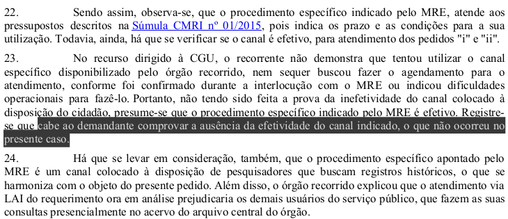O Itamaraty foi o único órgão com o qual chegamos até à CGU em relação a registros da Eco-92, e o que mais demorou para uma resposta definitiva da última instância administrativa da LAI - a CGU se pronunciou em 21 de outubro deste ano. Assim como no primeiro pedido geral, o MRE “alegou trabalhos adicionais”. A pasta também tentou neste recurso alegar que o pedido tratava-se de um pedido de “cunho individual”.
Novamente, após a primeira resposta, o Itamaraty não mencionou mais o “cunho individual”, mas arrastou a alegação de “trabalhos adicionais” até a CGU. Como apontamos que não havia qualquer dado concreto apontado pelo ministério para justificar a desproporcionalidade do pedido - como horas de trabalho, equipe, entre outros dados - a pasta informou que haveria mais de 1 mil documentos sobre o evento. Além disso, alegou a necessidade de pré-análise do material.
Como em outros de nossos pedidos, indicamos que tal alegação feria diretamente o art. 39, § 4o, da LAI, já que o dispositivo legal determina que os documentos produzidos, antes da vigência da Lei no 12.527/2011 e que não tenham sido classificados em até 2 (dois) anos, são automaticamente públicos.
Em nova resposta, o MRE passou a incluir em sua justificativa a existência de nossos outros pedidos de LAI feitos ao órgão em busca de registros de todas as COPs, além das solicitações específicas sobre 4 COPs - das quais tratamos nos tópicos anteriores. Alegou novamente, portanto, a necessidade de análise prévia do material e a desproporcionalidade do pedido. De acordo com a pasta, o departamento responsável por todos os pedidos que fizemos estaria deficitário em número de servidores.
Apesar da negativa, o Itamaraty passou a oferecer a possibilidade de pesquisar in loco nos registros do ministério pelos documentos demandados. Apesar de não utilizarmos esta via - explicamos melhor mais a frente no texto - a pasta se utilizou da possibilidade de pesquisa presencial contra nós, argumentando que não utilizamos o canal disponibilizado antes do recurso feito à CGU.
A própria CGU aponta em sua análise que a oferta de pesquisa presencial é apenas o cumprimento do artigo 11, §1º, I, e § 3º da Lei de Acesso à Informação. Não há registro, em nenhuma das respostas ao menos, de obrigatoriedade de contato por e-mail, como o Itamaraty dá a entender à instância recursal. Veja:
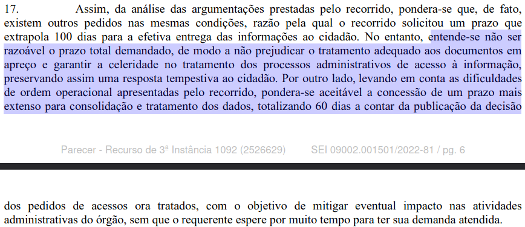Foi apenas a partir do relato que a CGU fez das respostas a seus questionamentos ao MRE, que este informou não haver organização no “acervo arquivístico” da pasta, tampouco disponibilização digital dos documentos requisitados.
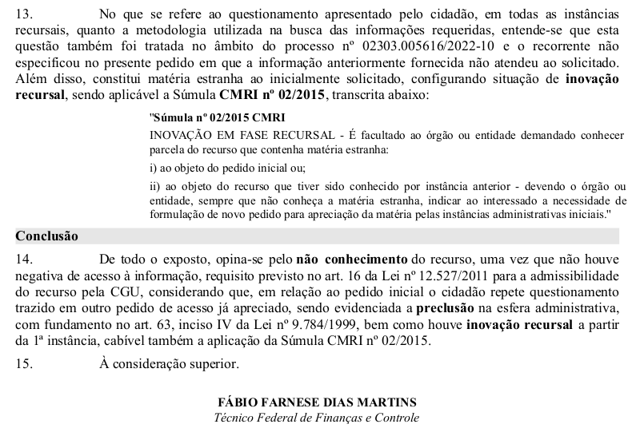A organização de documentos do Itamaraty foi questionada desde nosso primeiro recurso, quando argumentamos que o simples fato de não estarem digitalizados não poderia ser usado como alegação para trabalhos adicionais, pois grande quantidade de documentos - até então, avaliados em torno de 1 mil - não implicaria necessariamente trabalhos adicionais, bastando haver organização.
Fomos ainda mais explícitos nesse questionamento no segundo recurso. Apontamos que não seria cabível o sigilo de informações pessoais em questões relacionadas a eventos públicos (inclusive audiências, reuniões e conferências) entre agentes públicos. Também indicamos que a Lei Federal 6.938/1981 é ainda mais severa em relação a negativas de informações ambientais, pois diz que: " Art 9o - São instrumentos da Política Nacional do Meio Ambiente: [...] XI - a garantia da prestação de informações relativas ao meio ambiente, obrigando-se o Poder Público a produzi-las, quando inexistentes”.
De acordo com a última análise da CGU, o Itamaraty recalculou em mais de vinte vezes a estimativa de documentos sobre a ECO-92. Passou de 1 mil documentos na resposta ao primeiro recurso, para 56 pastas físicas contendo entre 200 e 500 documentos cada. Com uma média de 350 documentos, seriam 19,6 mil documentos:
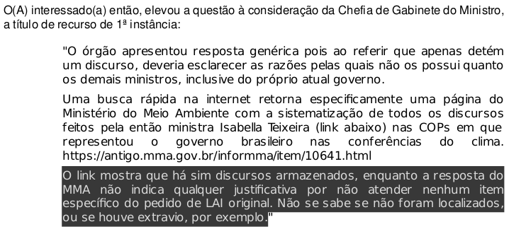Desta forma, não conseguimos ainda encontrar qualquer registro de discursos proferidos por agentes públicos brasileiros durante a ECO-92 nos órgãos do executivo federal. Tampouco, de representantes do executivo, neste que foi o evento-semente para 26 encontros internacionais que, pouco a pouco, tentam definir novos rumos para a vida humana - ao menos se ainda quisermos evitar os males maiores que as mudanças climáticas já mostram, com um aumento assustador de eventos climáticos extremos no mundo.
Agradecemos o professor Bruno Schimitt Morassutti, cujas valiosas contribuições e troca de impressões foram essenciais para o aproveitamento máximo desta via institucional como instrumento de transparência pública e promotor de mudanças no fornecimento de dados que deveriam ser públicos e acessíveis.